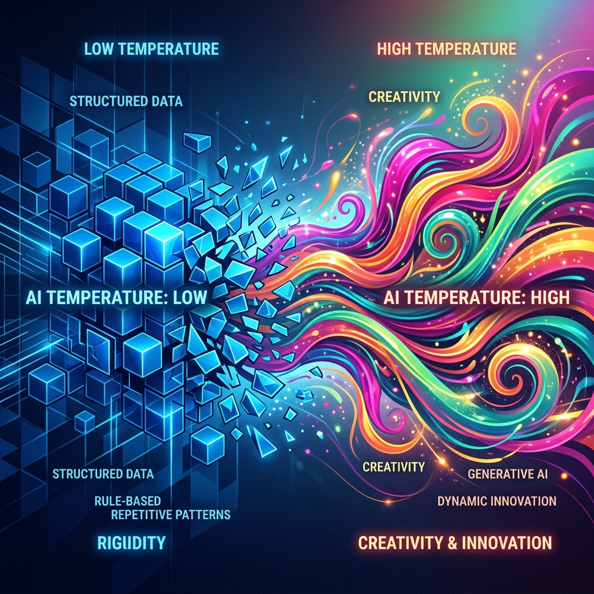
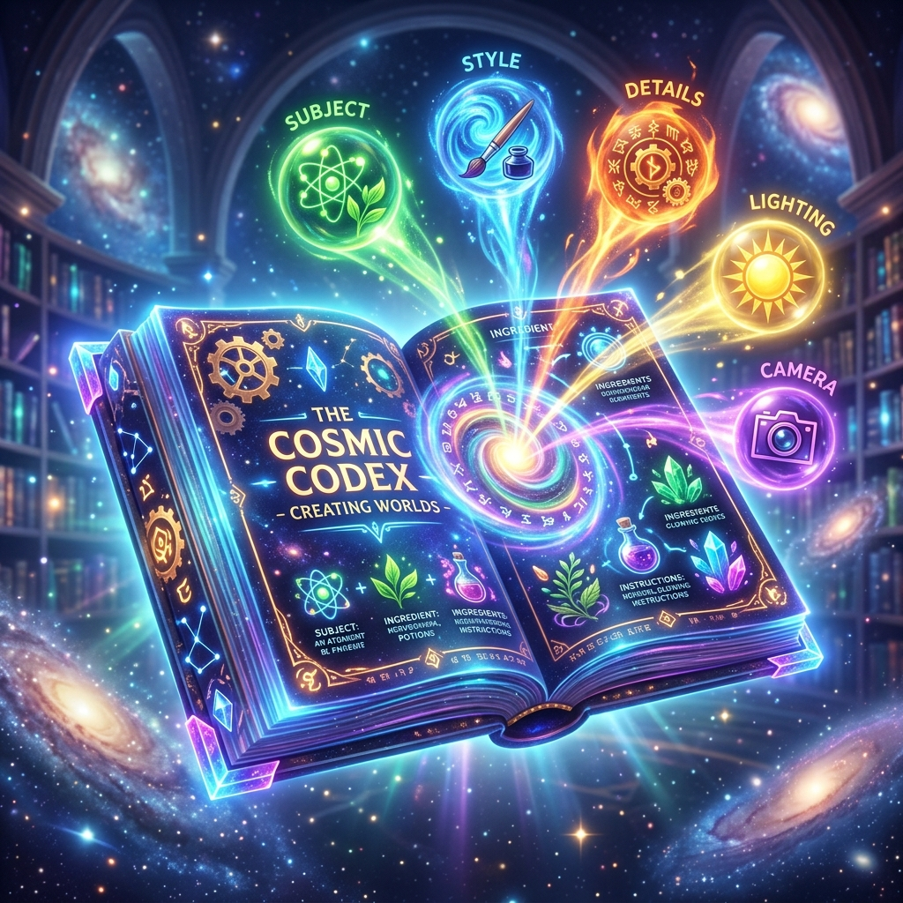
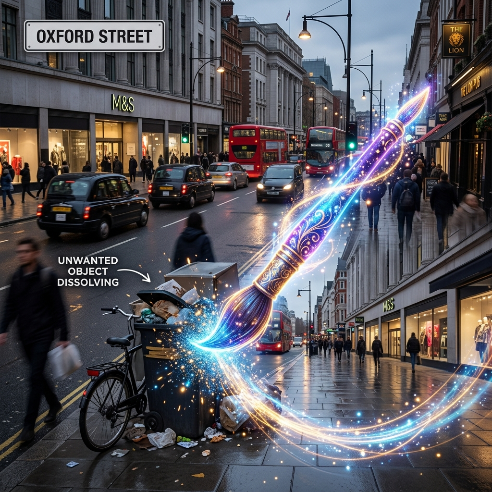

เครื่องมือ Generative AI: แชต · สร้างภาพ · วิดีโอ
ระบุข้อมูลผู้เรียน
LLM Playground
| ทักษะ | เครื่องมือหลัก (ไม่ต้องสมัคร) |
|---|---|
| คุยกับ AI · ปรับ Temperature · ตั้ง System Prompt | HuggingChat — huggingface.co/chat (โหมด guest) หรือ Gradio Chat Space ที่มีแถบ Temperature/System |
| เทียบรุ่นโมเดล เร็ว vs เก่ง | LMArena — lmarena.ai (โหมด Direct Chat คู่กัน) |
Temperature — ปุ่มปรับ “ความสร้างสรรค์”
Temperature คือค่าที่บอก AI ว่าจะ “เดาคำถัดไป” อย่างปลอดภัยหรือกล้าเสี่ยงแค่ไหน
- ค่าต่ำ (~0.2): คำตอบนิ่ง คาดเดาได้ ซ้ำเดิม — เหมาะกับงานที่ต้องการความถูกต้อง
- ค่าสูง (~1.2–1.5): คำตอบหลากหลาย แปลกใหม่ บางทีเพี้ยน — เหมาะกับงานสร้างสรรค์
ให้เลียนแบบแนวคิดได้ 2 วิธี — (1) รันโจทย์เดิม ซ้ำ 3 ครั้ง ดูว่าคำตอบต่างกันไหม และ (2) สั่งตรงๆ ว่า “ตอบแบบจำเจตรงไปตรงมา” เทียบกับ “ตอบแบบสร้างสรรค์สุดขั้ว แปลกใหม่”

Temp สูง → 🟪🟦🟩🟧🟥🟨 กระจายเลือกได้หลายคำ
กิจกรรม A1: ทดลองปรับ Temperature
เปิด HuggingChat (หรือ Gradio Chat Space ที่ครูแชร์) แล้วใช้โจทย์สร้างสรรค์ประจำตัวของคุณ รันที่ค่า Temperature ต่ำ และ สูง อย่างละ 2–3 ครั้ง
1. โจทย์ของคุณ: ... เกี่ยวกับ “...”
2. รันที่ Temp ต่ำ (~0.2) — บันทึกผล
3. รันที่ Temp สูง (~1.3) ซ้ำ 2–3 ครั้ง — บันทึกผล
4. เปรียบเทียบว่าต่างกันอย่างไร
📌 โจทย์สร้างสรรค์ของคุณ
— (ระบุเลขที่นั่งก่อน)
ข้อ A1 — ผลการปรับ Temperature
System Prompt — กำหนด “บทบาท” ของ AI
System Prompt คือคำสั่งระดับบนสุดที่บอก AI ว่า “คุณคือใคร ต้องตอบสไตล์ไหน” ก่อนผู้ใช้จะถามคำถามจริง ทำให้คุมพฤติกรรม/บุคลิกของ AI ได้
ข้อ A2 — ตั้ง System Prompt ตามบทบาทที่สุ่มให้
บทบาทของคุณ: ...
คำสั่ง: นำบทบาทด้านบนไปตั้งเป็น System Prompt (หรือสั่งตั้งบทบาทในบรรทัดแรก) จากนั้นถามคำถามทดสอบทั่วไป 1 ข้อ เช่น “อธิบายว่าฝนตกได้อย่างไร” หรือ “ขอไอเดียอาหารเย็น” สังเกตและเปรียบเทียบคำตอบของ AI ก่อนและหลังตั้งบทบาท
เทียบโมเดล “เร็ว” vs “เก่ง” ด้วย LMArena
โมเดลรุ่นเล็ก/เร็ว ตอบไว ประหยัด แต่ตรรกะอาจพลาด ส่วนรุ่นใหญ่/เก่ง คิดลึกกว่าแต่ช้ากว่า
เปิด LMArena (lmarena.ai) เลือกโหมด Direct Chat ที่เปิดสองโมเดลคู่กัน เลือกรุ่นเล็กไว้ข้างหนึ่ง รุ่นใหญ่อีกข้าง แล้วถามโจทย์ตรรกะเดียวกัน

- คำตอบ ถูก ไหม?
- เร็ว ต่างกันแค่ไหน?
- วิธี อธิบายเหตุผล ละเอียดต่างกันอย่างไร?
ข้อ A3 — เทียบโมเดลด้วยโจทย์ตรรกะ
โจทย์ตรรกะของคุณ: ...
สร้างภาพ & วิดีโอ แบบไม่ต้องล็อกอิน
| ทักษะ | เครื่องมือหลัก (ไม่ต้องสมัคร) | ตัวสำรอง |
|---|---|---|
| สร้างภาพจากข้อความ | Perchance — perchance.org/ai-text-to-image-generator (ทำงานในเครื่อง ไม่ต้องรอคิว) | Pollinations — pollinations.ai |
| แก้ไขภาพ / Inpainting | Cleanup.pictures (ลบวัตถุ + เติมพื้นหลัง) | FlatAI — flatai.org (สั่งแทนที่ด้วยข้อความ) |
| ภาพนิ่ง → วิดีโอ | EaseMate | - |
| สร้างสื่อนำเสนอ/กราฟิก | Napkin.ai / Gamma (ร่างเนื้อหาด้วย Gemini ก่อน) | - |
⚠️ เครื่องมือสร้างวิดีโอฟรีคุม “ทิศทางกล้อง” ได้จำกัด — ส่วนใหญ่ขยับให้อัตโนมัติ เราจะ “สั่ง + สังเกตผล” เป็นหลัก
Concept หลัก
- 1. Subject (วัตถุหลัก): สิ่งที่อยากให้อยู่ในภาพ
- 2. Style (สไตล์ศิลปะ): เช่น photorealistic, watercolor, claymation
- 3. Details (รายละเอียดฉาก): ฉากหลัง สถานที่ องค์ประกอบ
- 4. Lighting (แสงเงา): soft morning light, neon, studio lighting
- 5. Camera (มุมกล้อง): wide-angle, bird's eye, close-up

ข้อ B1 — สร้างภาพ “รถยนต์ไฟฟ้าบินได้” ตามสไตล์ที่สุ่มให้
สไตล์ของคุณ: ... · เปิด Perchance
คำสั่ง: ใช้เครื่องมือ Perchance เขียนคำสั่งภาษาอังกฤษ (Prompt) เพื่อเจนภาพ รถยนต์ไฟฟ้าบินได้ (flying electric car) ตามสไตล์ที่สุ่มให้ด้านบน โดยประยุกต์ใช้สูตรพรอมต์ 5 แกน (Subject, Style, Details, Lighting, Camera) แล้วนำรูปผลงานมาวางส่ง
เลือกสัดส่วนภาพให้ตรงกับสื่อ
| สัดส่วน | ลักษณะ | เหมาะกับ |
|---|---|---|
| 16:9 / 21:9 | แนวนอนกว้าง | ปก YouTube, แบนเนอร์, บิลบอร์ด |
| 9:16 | แนวตั้ง | TikTok, IG/FB Story, Shorts |
| 1:1 | จตุรัส | โปรไฟล์, ปกเพลง, โพสต์ IG |
| 4:3 / 3:2 | คลาสสิก | ภาพสารคดี, นิตยสารกระดาษ |
สัดส่วนผิด = ภาพโดนบีบ/มีแถบดำ ดูไม่โปร และคนเลื่อนผ่านทันที · ใน Perchance เลือกปุ่ม Aspect Ratio หรือใส่คีย์เวิร์ด เช่น 9:16 aspect ratio
ข้อ B2 — แมตช์สัดส่วน & สไตล์ให้ตรงโจทย์สื่อ
คำสั่ง: พิจารณาโจทย์สื่อประจำตัวด้านบน แล้วจับคู่เลือกสัดส่วนและสไตล์ภาพที่ถูกต้อง จากนั้นร่างพรอมต์ภาษาอังกฤษสำหรับโจทย์นั้นเพื่อใช้สร้างรูปภาพ
Inpainting — ลบ/แทนที่วัตถุ ให้แสงเงากลมกลืน
Inpainting คือการระบายเลือกบริเวณหนึ่งของภาพ แล้วให้ AI ลบของเดิม + เติมพื้นหลัง/วัตถุใหม่ โดยคำนวณทิศทางแสงและเงาให้เนียนกับภาพเดิม
- Cleanup.pictures: ระบายทับวัตถุที่ไม่ต้องการ → AI ลบออกแล้วเติมพื้นหลังให้
- FlatAI: สั่งด้วยข้อความ เช่น “เปลี่ยนรถตู้เป็นรถ EV สีฟ้า” (ตัวเลือกเสริม)

ข้อ B3 — แก้ไขภาพถนน: ลบ (และลองแทนที่) วัตถุ
งานของคุณ: ...
คำสั่ง: ดาวน์โหลดภาพถนนตั้งต้นด้านล่าง แล้วใช้เครื่องมือ Cleanup.pictures หรือ FlatAI เพื่อลบหรือแทนที่วัตถุตามหัวข้อ งานของคุณ เติมแสงเงาให้เนียนกับภาพเดิม แล้วเซฟภาพส่ง
💾 👉 ดาวน์โหลดภาพตั้งต้น street_thailand.jpg (หรือหาภาพถนนเองจาก Google Images)
Napkin.ai + การเขียน Prompt ด้วยสูตร RFC
Napkin.ai เป็นเครื่องมือสำหรับแปลงข้อความเป็นแผนภาพ (Mind Map, Flowchart) จะทำงานได้ดีที่สุดเมื่อมีโครงเนื้อหาที่ชัดเจน แนะนำให้ใช้ Gemini ช่วยร่างเนื้อหาก่อน โดยใช้สูตร RFC:
- R = Role (บทบาท): คุณคือใคร? (เช่น คุณคือครูวิทยาศาสตร์)
- F = Format (รูปแบบ): ผลลัพธ์แบบไหน? (เช่น หัวข้อย่อยสั้นๆ 5 ข้อสำหรับทำแผนภาพ)
- C = Context (บริบท): เป้าหมายคืออะไร? (เช่น เพื่อให้เด็กเข้าใจวัฏจักรน้ำ)
"[Role] คุณคือผู้เชี่ยวชาญด้านประวัติศาสตร์ [Context] จงอธิบายสงครามโลกครั้งที่ 2 ให้เด็กประถมเข้าใจง่าย [Format] โดยสรุปเป็น 3 หัวข้อสั้นๆ"
1. ให้ Gemini สร้างเนื้อหาด้วยสูตร RFC
2. คัดลอก ข้อความที่ได้
3. นำไปวางใน Napkin.ai เพื่อทำแผนภาพ
ข้อ B4 — ออกแบบแผนภาพด้วย Napkin.ai
คำสั่ง: เขียนพรอมต์ด้วยสูตร RFC (Role, Format, Context) เพื่อสั่งให้ Gemini ร่างเนื้อหาเกี่ยวกับ หัวข้อสำหรับการสร้างแผนภาพ ด้านบน จากนั้นนำข้อความผลลัพธ์ไปใส่ใน Napkin.ai เพื่อให้ AI เจนเป็นแผนภาพหรือกราฟิก (เช่น Mind Map, Flowchart) แคปภาพผลงานมาวางส่ง และอธิบายข้อสังเกต
Gamma.app + การเตรียมเนื้อหาด้วย RFC
Gamma.app เป็นเครื่องมือสร้างสไลด์นำเสนอที่รวดเร็ว แต่จะได้ผลลัพธ์ที่ตรงใจขึ้นหากเราเตรียมโครงเนื้อหาให้มันก่อน โดยใช้สูตร RFC ใน Gemini เช่นกัน:
- R = Role: ควบคุมทิศทางและภาษา (เช่น เป็นวิทยากรมืออาชีพ)
- F = Format: ออกแบบโครงสไลด์ (เช่น แบ่งเป็น 5 สไลด์ แต่ละสไลด์มีหัวข้อและ Bullet points)
- C = Context: บริบทผู้ฟัง (เช่น สำหรับนำเสนอผู้บริหาร)
"[Role] คุณคือนักการตลาด [Context] ต้องการนำเสนอกลยุทธ์ปี 2024 [Format] ช่วยเขียนโครงสไลด์ 3 หน้า แต่ละหน้าประกอบด้วยหัวข้อหลักและคำอธิบายสั้นๆ"
1. ร่างเนื้อหาสไลด์จาก Gemini
2. คัดลอก ไปใส่โหมด "Paste in text" ใน Gamma
3. เลือก Theme และปล่อยให้ Gamma จัดหน้าให้
ข้อ B5 — สร้างสไลด์นำเสนอด้วย Gamma
คำสั่ง: เขียนพรอมต์ด้วยสูตร RFC (Role, Format, Context) เพื่อสั่งให้ Gemini ร่างโครงร่างสไลด์ (อย่างน้อย 3-4 หน้า) ในหัวข้อด้านบน จากนั้นนำข้อความไปวางใส่ในโหมด "Paste in text" ของ Gamma.app เลือก Theme และให้ AI เจนหน้าสไลด์ออกมา แคปหน้าสไลด์บางส่วนมาวางส่ง พร้อมระบุข้อสังเกต
ใช้ AI อย่างปลอดภัยและมีจริยธรรม

บันทึกใบงานส่งครู
🚨 อย่าลืมกรอก “ชื่อ–นามสกุล” ในสไลด์ที่ 2 ให้ครบ จึงจะบันทึกเป็น PDF ได้